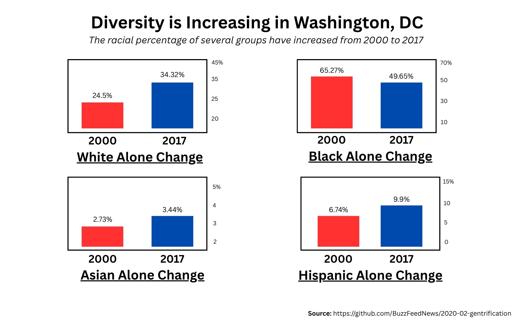

The dataset: This data comes from a BuzzFeed News investigation published in February 2020, which analyzed how Black residents have been displaced from neighborhoods in five major US cities. The data pulls from the US Census Bureau's American Community Survey (2013 - 2017) and a dataset called the Longitudinal Tract Data Base, which makes Census tract boundaries comparable across decades.
The two charts use BuzzFeed's adaptation of Governing Magazine's gentrification methodology. A tract (which is a small geographic neighborhood unit within the city) is eligible if, in 2000, it had at least 500 residents, a median income in the bottom 40% of its metro area, and a median home value also in the bottom 40%. A tract is classified as gentrified if it was eligible AND by 2017 its home values had risen into the top third of the metro area AND its share of college-educated residents had grown into the top third.
How this data was used in this visualization: The original dataset contains 2,799 census tracts across the five cities. Several transformations were applied to prepare this data for visualization First, the dataset was filtered into two subsets:
Download the transformed dataset here.
Important note about potential bias: This visualization only shows changes in racial population share, it does not capture the income, home value, or education shifts that also drive displacement. The "gentrified" vs. "eligible" classification is also based on fixed thresholds, so tracts near the cutoff could fall either way. For the more information on these factors, please refer to the original article and visit Buzzfeed's Github Repository.
Select a city from the dropdown to switch between Atlanta, Baltimore, New York City, Oakland, and Washington DC. Hover over any bar to see the exact percentage change and how many census tracts are included in that average. Hover over any terms to get definitions and more information.
